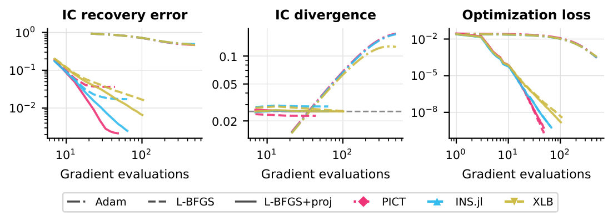
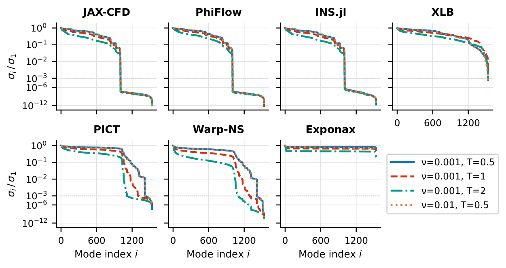
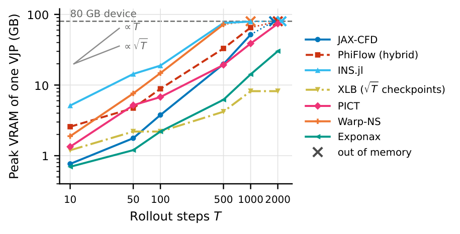
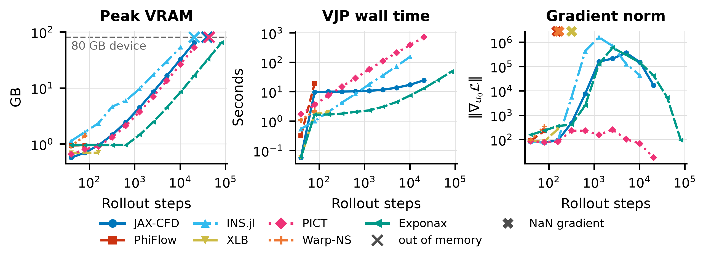

Mosaic: A Benchmark Suite for Differentiable Physics Solvers
NeurIPS 2026, Evaluations and Datasets track
Pasteur Labs
Abstract
Differentiable partial differential equation (PDE) solvers underpin solver-in-the-loop ML training, gradient-based optimal control, and inverse problems, yet the practical cost of obtaining correct, usable gradients from a given solver on a given problem is largely undocumented. Integration effort, computational cost, memory, gradient accuracy, and numerical stability vary widely across solvers and are discoverable only by trial and error.
We introduce Mosaic, an extensible benchmarking framework for differentiable PDE solvers that standardizes access to solver gradients. Each solver is packaged as a containerized component (Tesseract) exposing a uniform gradient API regardless of language or automatic differentiation (AD) strategy, enabling researchers to evaluate, compare, and build on non-trivial physical solvers.
Our evaluation of 14 solvers across fluid dynamics, structural mechanics, and heat transfer demonstrates that the benchmark surfaces practically relevant differences: order-of-magnitude variation in computational cost and memory, alongside setup incompatibilities and instabilities that rule out solvers for specific tasks. Despite this variation, all solvers that produce gradients converge to similar optima on our tasks, indicating that the practical barriers are memory limits, numerical stability, and setup compatibility rather than gradient accuracy alone.
The optimizer matters more than the solver
On 3D initial-condition recovery, L-BFGS recovers the initial state an order of magnitude more accurately than Adam, in a fraction of the gradient evaluations. Projecting the gradient onto divergence-free fields before each L-BFGS update improves the recovery on every solver.

Jacobian spectra reflect how a solver treats divergence
The spectra fall into three shapes, which mostly reflect how each solver treats initial perturbations that are not divergence-free. Solvers that project those out exactly have singular values at round-off. No shape predicts which solvers stay stable over long rollouts, since each occurs among stable and unstable solvers alike.

Memory follows the differentiation strategy
Reverse-mode AD through a time loop stores every state, so memory grows linearly with the number of steps. Checkpointing, used here only by XLB, reduces this to the square root. Without it, the stored trajectory limits a 483 rollout to a few thousand steps, even with 80 GB.

Long rollouts end in memory limits or non-finite gradients
Memory is not always the first limit. Extending the F3 rollout to 81,920 steps, PhiFlow and Warp-NS return non-finite gradients after 160 steps and XLB after 320, while INS.jl, JAX-CFD and PICT stay stable until they run out of memory. Exponax completes every horizon.

Reproducing the paper
The paper's results were computed on one NVIDIA A100 80 GB with the code and solver environments of the v0.3+paper-repro tag. The repository README describes how to regenerate the figures and tables from the published results, or re-run the experiments.
Citation
@inproceedings{rehmann2026mosaic,
title = {Mosaic: A Benchmark Suite for Differentiable Physics Solvers},
author = {Rehmann, Andrin and Zimmermann, Heiko and H{\"a}fner, Dion},
booktitle = {Advances in Neural Information Processing Systems},
note = {Evaluations and Datasets Track},
year = {2026},
eprint = {2606.27895},
archivePrefix = {arXiv}
}